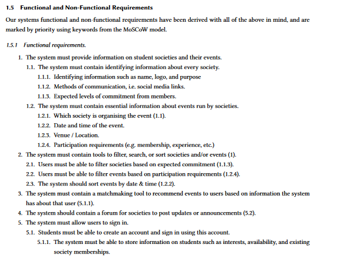

For this year-long Computer Science module, my group of eight was tasked with identifying a real-world problem, engaging with stakeholders, and building a full-scale solution. The goal was to mimic an industry product lifecycle—complete with Scrum meetings, sprints, and defined team roles.
We focused on student-society engagement, looking for ways to streamline how students interact with university societies during high-traffic events like Freshers' Week and sports fairs.
A significant portion of our time was spent surveying and interviewing stakeholders to build a solid foundation for the project. Halfway through, we narrowed our scope and established a core set of objectives:

We knew the development phase would be a time crunch, especially with other exams looming. Our strategy was simple: develop a rigorous plan and stick to it, while remaining adaptable enough to handle the inevitable hurdles.
Stepping into a Technical Lead Role
Once we outlined the system's functions, I took the lead on investigating and testing our tech stack. While the rest of the team was primarily experienced in Python, I had been exploring modern web technologies on my own—partly inspired by the trends in Stack Overflow’s annual developer surveys.
I focused on the "notoriously troublesome" topics. After our weekly Scrum meetings, I gave walkthroughs on Git conventions (branching, merging, and commits), React, Flask, and Docker.
I spent a lot of time setting up the initial images and repositories, eventually walking the group through how to use Docker containers to unify our working environments. By emulating a system distributed across multiple servers, we were able to move away from testing on personal machines and establish remote deployments on Digital Ocean droplets.
Development & Crisis Management
Getting over the initial React learning curve was tough, but once I got comfortable with hooks and components, the development became incredibly rewarding. However, the project hit a major snag when a team member revealed—just days before a key deadline—that their frontend work wasn't actually done, despite claiming otherwise in meetings.
Since I had the most React experience, I took on their remaining tasks alongside my own responsibilities. It meant some very late nights, but it was the only way to ensure the team hit the deadline. Moving forward, we implemented more frequent code check-ins to ensure development was progressing evenly—a lesson in project management we should have applied from day one.
By the end of the module, we had built a small-scale CI/CD pipeline. It might have felt like overkill for the scope, but it proved to be a massive asset during the final push.
Evaluation & Live Iteration
To wrap up, we evaluated our system against the university’s existing Student Union website. We ran our platform live on Digital Ocean and conducted interviews with real users to see if we had actually solved the engagement problem.
When users discovered bugs during testing, I’d go "bug hunting" after lectures. I’d fix the issue locally, push to the remote branch, and let our GitHub Actions script handle the rest—automatically building new images and deploying them to the Droplets.
Having that automated pipeline made the evaluation phase seamless; I can’t imagine how frustrating it would have been to patch the remote system manually every time. In the end, I crunched the numbers for the final report, performed the statistical analysis, and secured a grade I’m very happy with.
Final Reflections
- Adaptability: Mastering React mid-project allowed me to step up during a crisis and produce a product I'm genuinely proud of.
- The Power of Automation: Building my first CI/CD pipeline with Docker and GitHub Actions was a steep climb, but the satisfaction of seeing it work was a highlight of the year. It’s definitely steered my interest toward DevOps.
- Leadership: I was surprised by how much I enjoyed the leadership aspect—facilitating technical discussions and bringing the group’s different skills together to reach a common goal.
A look at the final system: